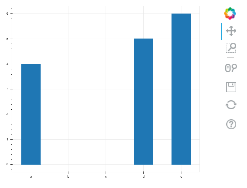

程式試打 <<
Previous Next >> HomeWork4
Exercise36
Birthday Plots
Exercise 36（and Solution）
This exercise is Part 4 of 4 of the birthday data exercise series. The other exercises are: Part 1, Part 2, and Part 3.
此練習是生日數據練習系列4的第4部分。其他練習是：第1部分，第2部分和第3部分。
In the previous exercise we counted how many birthdays there are in each month in our dictionary of birthdays.
在上一個練習中，我們在生日詞典中計算了每個月有多少個生日。
In this exercise, use the bokeh Python library to plot a histogram of which months the scientists have birthdays in! Because it would take a long time for you to input the months of various scientists, you can use my scientist birthday JSON file. Just parse out the months (if you don’t know how, I suggest looking at the previous exercise or its solution) and draw your histogram.
在本練習中，使用bokeh Python資料庫繪製科學家在哪幾個月生日的直方圖！由於輸入多個科學家的時間會花費很長時間，因此可以使用我的科學家生日JSON文件。只需解析幾個月（如果您不知道如何做，我建議您查看上一個練習或其解決方案）並繪製直方圖。
If you are using a purely web-based interface for coding, this exercise won’t work for you, since it requires installing the bokeh Python package. Now might be a good time to install Python on your own computer.
如果您使用的是純粹基於網絡的界面進行編碼，則此練習對您不起作用，因為它需要安裝bokeh Python軟件包。現在可能是在自己的計算機上安裝Python的好時機。
Discussion
Today’s topic is going to be about the bokeh plotting library. We create plots and charts to display and communicate information from data, and it would be great to do that directly from Python. Sometimes it is really nice to write code or algorithms from scratch to learn and practice, and sometimes, someone has already written the code so well that you should use theirs. Bokeh is one of these libraries - it is library specifically with functions for making plots, charts, and graphs. It is based on the famous D3.js library originally developed at the New York Times for their visualizations, which has been used for many years to programmatically create visually appealing data visualizations.
今天的主題是關於散景繪圖資料庫。我們創建繪圖和圖表以顯示和傳達數據中的信息，直接從Python中進行操作非常好。有時候從頭開始編寫代碼或算法來學習和實踐真的很棒，有時，有人已經寫好了代碼，應該使用他們的代碼。 Bokeh是這些資料庫之一-它是專門具有繪製圖表，圖表和圖形的函數的資料庫。它基於最初在《紐約時報》上開發的用於可視化的著名D3.js資料庫，該資料庫已被用於以編程方式創建具有視覺吸引力的數據可視化。
When to make plots
We use plots to convey information. From this histogram:

You can immediately see that the US government spending has been steadily increasing, reaching a peak in January 2017.
您可以看到，美國政府支出一直在穩定增長，在2017年1月達到峰值。
So learning how to make plots will help you become better at displaying and communicating information, both to yourself and to others.
因此，學習如何繪製情節將有助於您更好地顯示和與自己以及他人交流信息。
Plotting libraries in Python
If you are looking for a plotting library in Python, you have two main options: matplotlib and bokeh. Today I want to discuss bokeh, because I think it will become more popular in years to come.
如果要在Python中尋找繪圖資料庫，則有兩個主要選項：matplotlib和bokeh。 今天，我想討論散景，因為我認為它會在未來幾年變得越來越流行。
Many Python developers (and especially data scientists and researchers) will tell you that the most commonly used plotting library in Python is matplotlib. I myself was a matplotlib user for many years - the integrations with Python data libraries are great, and migrating from the MATLAB plotting environment to matplotlib is easy. But a friend introduced me to bokeh and I was hooked ever since. Because it is based on D3.js, the visualizations look smooth and professional.
許多Python開發人員（尤其是數據科學家和研究人員）會告訴您，Python中最常用的繪圖資料庫是matplotlib。 我本人是matplotlib用戶多年，與Python數據資料庫的集成非常好，並且從MATLAB繪圖環境遷移到matplotlib很容易。 但是一個朋友向我介紹了散景，從那時起我就迷上了。 由於它基於D3.js，因此可視化效果看起來既流暢又專業。
There is no one “best” plotting library - you should use whichever one feels and looks better for you. But for the rest of this post, I’ll talk about how to use bokeh to make a basic plot.
沒有一個“最佳”繪圖資料庫-您應該使用對您而言感覺更好的一種。 但是，在本文的其餘部分中，我將討論如何使用bokeh進行基本繪圖。
Installing bokeh
To use bokeh, we first have to install it. Unlike something like json or Counter from previous exercises, bokeh does not come installed with Python.
要使用bokeh，我們首先必須安裝它。 與以前的練習中的json或Counter之類的東西不同，Python不附帶bokeh。
If you are using the Anaconda Python distribution (which you should, if you are on Windows!) then you can install bokeh by typing
conda install bokeh
in the Windows command prompt or the bash shell.
On OSX or GNU / Linux, just type
pip3 install bokeh
(If you have are using Python 2, you should do pip install bokeh.)
如果使用的是Anaconda Python發行版（如果在Windows上，則應使用該發行版），然後可以通過輸入來安裝bokeh
conda install bokeh
在Windows命令提示符或bash shell中。
在OSX或GNU / Linux上，只需輸入
pip3 install bokeh
（如果您使用的是Python 2，則應執行pip install bokeh。）
Using bokeh
The basic idea of any plotting package is simple:
任何繪圖程序包的基本思想都很簡單：
- Load the data（加載數據）
- Display the data（顯示數據）
So the first thing you have to do is prepare some data. Usually, when you are plotting data you have two axes, or groups of data, an x-axis (or horizontal axis) and a y-axis (or vertical axis). The x variable is your input (independent) variable and the y variable is your output (dependent) variable.
因此，您要做的第一件事是準備一些數據。 通常，在繪製數據時，您有兩個軸或一組數據，分別是x軸（或水平軸）和y軸（或垂直軸）。 x變量是您的輸入（獨立）變量，y變量是您的輸出（獨立）變量。
For use in bokeh, your data should be loaded into two separate lists, one for the x-axis and one for the y-axis. The basic format of a bokeh (in this case histogram) looks like this:
為了在bokeh中使用，您的數據應加載到兩個單獨的列表中，一個用於x軸，一個用於y軸。 散景的基本格式（在本例中為直方圖）如下所示：
# need to import at least 3 things to make your
# bokeh plots work
from bokeh.plotting import figure, show, output_file
# we specify an HTML file where the output will go
output_file("plot.html")
# load our x and y data
x = [10, 20, 30]
y = [4, 5, 6]
# create a figure
p = figure()
# create a histogram
p.vbar(x=x, top=y, width=0.5)
# render (show) the plot
show(p)
The way bokeh outputs plots is really cool: when you run a piece of bokeh code, it outputs the result into an HTML file that you can then save and display in a web browser on it’s own. After you run this segment on top, it will automatically open a web browser and show you a plot.
散景輸出圖的方式真的很酷：運行一段散景代碼時，它將結果輸出到HTML文件中，然後您可以將其保存並單獨顯示在網絡瀏覽器中。 在頂部運行此段後，它將自動打開Web瀏覽器並顯示圖。
One awesome feature of Bokeh is that it gives you a toolbar you can use to play with the graph - moving it around, zooming out, saving it, etc. Plus, you can put it directly into am HTML page!
Bokeh的一項令人敬畏的功能是，它為您提供了一個可用於處理圖形的工具欄-進行移動，縮放，保存等。此外，您可以將其直接放入HTML頁面！
It will look something like this:
它看起來像這樣：

The example above works when x is a numerical value. But, in the exercise, we are dealing with months, which is called a “categorical” variable (i.e. it belongs to a category, and is not continuous). To make sure bokeh draws the axis correctly, you need to specify a special call to figure() to pass an x_range, like so:
當x是數字值時，以上示例適用。 但是，在練習中，我們要處理幾個月，這被稱為“類別”變量（即它屬於一個類別，並且不是連續的）。 為確保bokeh正確繪製軸，您需要指定對fig（）的特殊調用以傳遞x_range，如下所示:
from bokeh.plotting import figure, show, output_file
output_file("plot.html")
x_categories = ["a", "b", "c", "d", "e"]
x = ["a", "d", "e"]
y = [4, 5, 6]
p = figure(x_range=x_categories)
p.vbar(x=x, top=y, width=0.5)
show(p)
Here’s what this one looks like:
它看起來像這樣：
There are also extra commands and arguments you can pass to bokeh to display an title for the plot, for each of the axis, for the color of the bars, and so on.
也有可以傳遞給背景虛化，為圖上顯示的標題，每個軸的，對各條的顏色，等等額外的命令和參數。
If you want to dive deep into that documentation, check out these resources:
如果您想深入了解該文檔，請查看以下資源：
If you want to add more flair to your histogram from this exercise, there are many resources on the web to help you out!
如果您想通過此練習為直方圖增加更多個性，網絡上有很多資源可以幫助您！
程式試打 <<
Previous Next >> HomeWork4